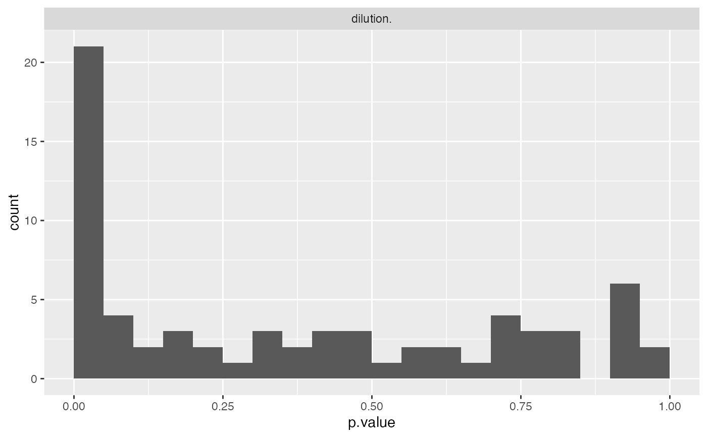

Do Model
Do Model
Public fields
modelDFdata.frame with modelling data and model.
Methods
Public methods
Method new()
Usage
Model$new(modelDF, modelName, subject_Id = "protein_Id")
Method get_coefficients()
return model coefficient table return anova table writes results of `model_analyse`, anova table and all the coefficients with parameters.
Usage
Model$get_coefficients()
Method get_anova()
Usage
Model$get_anova()
Method write_coefficients()
Usage
Model$write_coefficients(path)
Method write_anova()
Usage
Model$write_anova(path)
Method coef_histogram()
histogram of model coefficient
Usage
Model$coef_histogram()
Method coef_volcano()
volcano plot of non intercept coefficients
Usage
Model$coef_volcano()
Method coef_pairs()
pairsplot of coefficients
Usage
Model$coef_pairs()
Method anova_histogram()
histogram of anova results
Usage
Model$anova_histogram()
Method write_anova_figures()
Usage
Model$write_anova_figures(path, width = 10, height = 10)
Method write_coef_figures()
Usage
Model$write_coef_figures(path, width = 10, height = 10)
Method clone()
The objects of this class are cloneable with this method.
Usage
Model$clone(deep = FALSE)
Arguments
deepWhether to make a deep clone.
Examples
rm(list = ls()) library(LFQService) library(tidyverse) D <- LFQService::ionstar$normalized() D$data <- dplyr::filter(D$data ,protein_Id %in% sample(protein_Id, 100)) modelName <- "f_condtion_r_peptide" formula_randomPeptide <- make_custom_model_lmer("transformedIntensity ~ dilution. + (1 | peptide_Id)", model_name = modelName) pepIntensity <- D$data config <- D$config config$table$hkeysDepth()#> [1] "protein_Id"mod <- LFQService::build_model( pepIntensity, formula_randomPeptide, modelName = modelName, subject_Id = config$table$hkeysDepth())#>#>#>mod$modelDF#> # A tibble: 67 x 9 #> # Groups: protein_Id [67] #> protein_Id data linear_model exists_lmer isSingular df.residual sigma nrcoef #> <chr> <lis> <list> <lgl> <lgl> <dbl> <dbl> <int> #> 1 sp|O43660~ <tib~ <lmrMdLmT> TRUE FALSE 79 0.367 5 #> 2 sp|P62857~ <tib~ <lmrMdLmT> TRUE FALSE 53 0.695 5 #> 3 sp|Q9Y3A5~ <tib~ <lmrMdLmT> TRUE FALSE 172 0.287 5 #> 4 sp|Q13838~ <tib~ <lmrMdLmT> TRUE FALSE 199 0.305 5 #> 5 sp|O00148~ <tib~ <lmrMdLmT> TRUE FALSE 178 0.338 5 #> 6 sp|P07602~ <tib~ <lmrMdLmT> TRUE FALSE 202 0.357 5 #> 7 sp|P25789~ <tib~ <lmrMdLmT> TRUE FALSE 142 0.435 5 #> 8 sp|P04150~ <tib~ <lmrMdLmT> TRUE FALSE 61 0.311 5 #> 9 sp|Q07866~ <tib~ <lmrMdLmT> TRUE FALSE 154 0.372 5 #> 10 sp|P41252~ <tib~ <lmrMdLmT> TRUE FALSE 508 0.299 5 #> # ... with 57 more rows, and 1 more variable: nrcoeff_not_NA <int>#> # A tibble: 6 x 10 #> # Groups: protein_Id [6] #> protein_Id isSingular nrcoef factor Sum.Sq Mean.Sq NumDF DenDF F.value Pr..F. #> <chr> <lgl> <int> <chr> <dbl> <dbl> <int> <dbl> <dbl> <dbl> #> 1 sp|O43660|~ FALSE 5 dilut~ 0.0225 0.00563 4 75.3 0.0418 0.997 #> 2 sp|P62857|~ FALSE 5 dilut~ 2.45 0.612 4 53. 1.27 0.294 #> 3 sp|Q9Y3A5|~ FALSE 5 dilut~ 0.329 0.0822 4 164. 1.00 0.408 #> 4 sp|Q13838|~ FALSE 5 dilut~ 0.146 0.0366 4 191. 0.394 0.812 #> 5 sp|O00148|~ FALSE 5 dilut~ 0.842 0.210 4 170. 1.84 0.124 #> 6 sp|P07602|~ FALSE 5 dilut~ 0.583 0.146 4 193. 1.15 0.336#> [1] "dilution."mod$get_coefficients()#> # A tibble: 335 x 9 #> # Groups: protein_Id [67] #> protein_Id isSingular nrcoef factor Estimate Std..Error df t.value #> <chr> <lgl> <int> <chr> <dbl> <dbl> <dbl> <dbl> #> 1 sp|O43660~ FALSE 5 (Inte~ -1.15 0.200 8.14 -5.74 #> 2 sp|O43660~ FALSE 5 dilut~ 0.0266 0.119 75.1 0.223 #> 3 sp|O43660~ FALSE 5 dilut~ -0.0128 0.125 75.2 -0.102 #> 4 sp|O43660~ FALSE 5 dilut~ 0.0302 0.123 75.2 0.245 #> 5 sp|O43660~ FALSE 5 dilut~ 0.00359 0.129 75.7 0.0277 #> 6 sp|P62857~ FALSE 5 (Inte~ 2.39 1.19 2.09 2.01 #> 7 sp|P62857~ FALSE 5 dilut~ -0.325 0.284 53. -1.15 #> 8 sp|P62857~ FALSE 5 dilut~ -0.570 0.284 53. -2.01 #> 9 sp|P62857~ FALSE 5 dilut~ -0.0864 0.284 53. -0.305 #> 10 sp|P62857~ FALSE 5 dilut~ -0.155 0.284 53. -0.545 #> # ... with 325 more rows, and 1 more variable: Pr...t.. <dbl>mod$coef_histogram()#> $plot#> #> $name #> [1] "Coef_Histogram_f_condtion_r_peptide.pdf" #>mod$coef_volcano()#> $plot#> #> $name #> [1] "Coef_VolcanoPlot_f_condtion_r_peptide.pdf" #>mod$coef_pairs()#> #> #>#> $plot#> #> $name #> [1] "Coef_Pairsplot_f_condtion_r_peptide.pdf" #>mod$anova_histogram()#> $plot#> #> $name #> [1] "Anova_p.values_f_condtion_r_peptide.pdf" #>